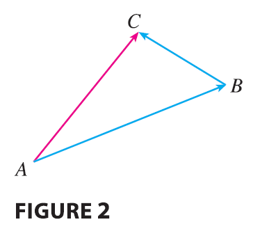
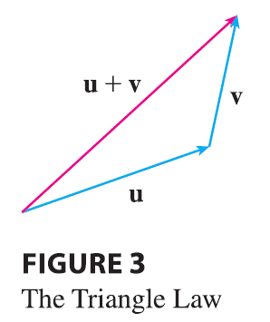
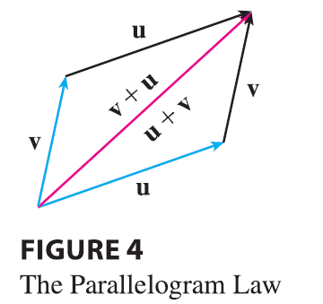
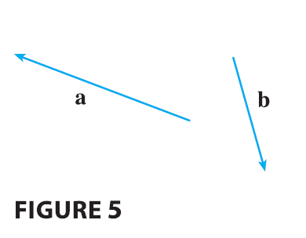

Suppose a particle moves from A to B, so its displacement vector is \(\vec{AB}\). Then the particle changes direction and moves from B to C, with displacement vector \(\vec{BC}\) as in Figure 2.

The combined effect of these displacements is that the particle has moved from A to C. The resulting displacement vector \(\vec{AC}\) is called the sum of \(\vec{AB}\) and \(\vec{BC}\) and we write \[ \vec{AC} = \vec{AB} + \vec{BC} \] In general, if we start with vectors u and v, we first move v so that its tail coincides with the tip of u and define the sum of u and v as follows.
Definition of Vector Addition If u and v are vectors positioned so the initial point of v is at the terminal point of u, then the sum \(\mathbf{u} + \mathbf{v}\) is the vector from the initial point of u to the terminal point of v.
The definition of vector addition is illustrated in Figure 3. You can see why this definition is sometimes called the Triangle Law.

In Figure 4 we start with the same vectors u and v as in Figure 3 and draw another copy of v with the same initial point as u. Completing the parallelogram, we see that \(\mathbf{u} + \mathbf{v} = \mathbf{v} + \mathbf{u}\). This also gives another way to construct the sum: if we place u and v so they start at the same point, then \(\mathbf{u} + \mathbf{v}\) lies along the diagonal of the parallelogram with u and v as sides. (This is called the Parallelogram Law.)

EXAMPLE 1 Draw the sum of the vectors a and b shown in Figure 5.
